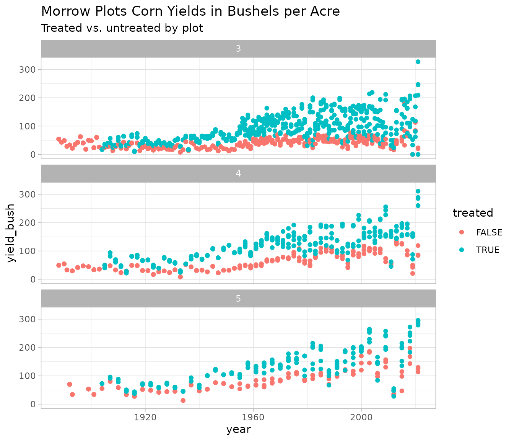

Morrow Plots Data Visualizations
morrow-plots-data-visualizations.RmdThis exercise uses dplyr and ggplot2 to show some examples of ways you might summarize and visualize data from the Morrow Plots.
You should install the dplyr and ggplot2 packages if you haven’t done so already.
library(morrowplots)
library(dplyr)
#>
#> Attaching package: 'dplyr'
#> The following objects are masked from 'package:stats':
#>
#> filter, lag
#> The following objects are masked from 'package:base':
#>
#> intersect, setdiff, setequal, union
library(ggplot2)Introduction
The Morrow Plots experiment tests how crop rotation and soil treatments affect corn yields. Plot 3 grows continuous corn. Plot 4 grows corn every other year. At first, Plot 4 corn was alternated with oats, but starting in 1967 soybeans were planted instead. Plot 5 uses a 3-crop rotation of corn, oats, and hay. Each plot has some subplots that receive fertilizing soil treatments and some subplots that are untreated.
Before we start visualizing this data, let’s first take a look at the data to see what we’re working with.
head(morrowplots)
#> # A tibble: 6 × 26
#> phase year plot plot_num plot_dir rotation corn crop variety all_corn
#> <dbl> <dbl> <chr> <dbl> <chr> <dbl> <lgl> <chr> <chr> <lgl>
#> 1 1 1888 3NA 3 NW 1 TRUE CC Burr's White FALSE
#> 2 1 1888 3NB 3 NW 1 TRUE CC Burr's White FALSE
#> 3 1 1888 3NC 3 NE 1 TRUE CC Burr's White FALSE
#> 4 1 1888 3ND 3 NE 1 TRUE CC Burr's White FALSE
#> 5 1 1888 3SA 3 SW 1 TRUE CC Burr's White FALSE
#> 6 1 1888 3SB 3 SW 1 TRUE CC Burr's White FALSE
#> # ℹ 16 more variables: yield_bush <dbl>, yield_ton <dbl>, treated <lgl>,
#> # treatment <chr>, manure <dbl>, lime <dbl>, nit <dbl>, p205 <dbl>,
#> # k20 <dbl>, stover <dbl>, population <dbl>, plant_date <chr>,
#> # plant_day <dbl>, soil_sample <lgl>, damage <chr>, notes <chr>Corn Yield Trends
We’ll use the ‘yield_bush’ data to plot corn yields over time, and the ‘rotation’ and ‘treated’ variables to compare the results of different growing strategies.
Subset corn data
First we need to filter the data to only include corn data. The ‘corn’ field is the easiest way to do this. It’s TRUE/FALSE and it includes both continuous corn (Plot 3) and corn in rotation with other crops (Plots 4 and 5).
We have a few years where ‘yield_bush’ data is missing and marked with ‘NA’. We’ll filter those out too so they don’t show up in our visualizations. If you’d like to see NAs, by all means leave them in.
In addition to filters, we also need to reformat the ‘rotation’ data that marks whether corn is planted every 1, 2, or 3 years. Since this data is numerical, R treats it as a double, but if we reformat it as a factor we can use it to group data in our visualizations. We can do that with the mutate function.
## name the new dataset mp corn for morrow plots corn
mpcorn <-
## filter to only include rows where corn is TRUE and 'yield_bush' is not 'NA'
dplyr::filter(morrowplots, corn == TRUE, !is.na(yield_bush)) %>%
## change 'rotation' data type from double to factor
dplyr::mutate(rotation = as.factor(rotation))
head(mpcorn)
#> # A tibble: 6 × 26
#> phase year plot plot_num plot_dir rotation corn crop variety all_corn
#> <dbl> <dbl> <chr> <dbl> <chr> <fct> <lgl> <chr> <chr> <lgl>
#> 1 1 1888 3NA 3 NW 1 TRUE CC Burr's White FALSE
#> 2 1 1888 3NB 3 NW 1 TRUE CC Burr's White FALSE
#> 3 1 1888 3NC 3 NE 1 TRUE CC Burr's White FALSE
#> 4 1 1888 3ND 3 NE 1 TRUE CC Burr's White FALSE
#> 5 1 1888 3SA 3 SW 1 TRUE CC Burr's White FALSE
#> 6 1 1888 3SB 3 SW 1 TRUE CC Burr's White FALSE
#> # ℹ 16 more variables: yield_bush <dbl>, yield_ton <dbl>, treated <lgl>,
#> # treatment <chr>, manure <dbl>, lime <dbl>, nit <dbl>, p205 <dbl>,
#> # k20 <dbl>, stover <dbl>, population <dbl>, plant_date <chr>,
#> # plant_day <dbl>, soil_sample <lgl>, damage <chr>, notes <chr>Plot Corn Yield Trend Lines
We’ll use geom_smooth to visualize trend lines for corn yields over the course of the experiment. Corn yields vary quite a bit from year to year because of uncontrolled variables like the weather. With a regular line graph, the lines would have drastic highs and lows, but geom_smooth averages the data to help us see the overall pattern.
## create a smooth line plot with 'year' on the x axis and 'yield_bush' on the y axis
## color code the lines by 'rotation'
## use line type to differentiate between treated and untreated corn
ggplot2::ggplot(data = mpcorn) +
ggplot2::geom_smooth(ggplot2::aes(x= year, y = yield_bush, color = rotation, linetype = treated))+
## add title and subtitle
ggplot2::labs(title = "Morrow Plots Corn Yield Trends in Bushels per Acre",
subtitle = "Treated vs. untreated and by number of crops in rotation")+
## add one of the built-in themes
ggplot2::theme_light()
#> `geom_smooth()` using method = 'loess' and formula = 'y ~ x'
Interpreting the Results
With geom_smooth, clear patterns emerge. Treated corn produces higher yields than untreated corn. We can also see that continuous corn provides the lowest yields. Corn in a 2-crop rotation performs better, and corn in a 3-crop rotation performs best.
Corn Yield Data in More Detail
Our smooth line graph synthesizes over a century of data into clear trends, but we can visualize the Morrow Plots in much greater detail with geom_point. The facet_wrap function in ggplot2 is also really handy for the Morrow Plots because it allows us to create grids of related graphs that are organized in the same way as the actual farm plots.
Yields by Plot
The geom_smooth plot above uses ‘rotation’ to create groupings, but we can get the same groupings with ‘plot_num’. Since we’re using facet_wrap to mimic the layout of the farm plots, it makes more sense to use ‘plot_num’ as a label.
Since geom_point plots every data point in ‘yield_bush’ we’ll see a lot more data from Plot 3 where corn is grown every year compared with Plots 4 and 5 that rotate corn with other crops.
## create a smooth line plot with 'year' on the x axis and 'yield_bush' on the y axis
## color code the lines by 'treated'
ggplot2::ggplot(data = mpcorn)+
ggplot2::geom_point(ggplot2::aes(x= year, y = yield_bush, color = treated))+
## create a grid of related plots with facet_wrap
ggplot2::facet_wrap(vars(plot_num), ncol = 1)+
## add title and subtitle
ggplot2::labs(title = "Morrow Plots Corn Yields in Bushels per Acre",
subtitle = "Treated vs. untreated by plot")+
## add one of the built-in themes
ggplot2::theme_light()
Yields by Subplot
Each of the 3 plots also have 8 subplots that receive different soil treatments. If we filter our data to one plot, we can use facet_wrap to break the data down by subplot and arrange it the same way the subplots are organized on the field with 4 northern subplots and 4 southern subplots.
## create a smooth line plot with 'year' on the x axis and 'yield_bush' on the y axis
## color code the lines by 'treated'
ggplot2::ggplot(data = dplyr::filter(mpcorn, plot_num == 5))+
ggplot2::geom_point(ggplot2::aes(x= year, y = yield_bush, color = treated))+
## create a grid of related plots with facet_wrap
ggplot2::facet_wrap(vars(plot), ncol = 4)+
## add title and subtitle
ggplot2::labs(title = "Morrow Plots Corn Yields in Bushels per Acre",
subtitle = "Plot 5 treated vs. untreated by subplot")+
## add one of the built-in themes
ggplot2::theme_light()
Yields by Subplot and Specific Treatment
Finally, we can look at the same data in even greater detail if we color code it by the specific treatment strategy.
## create a smooth line plot with 'year' on the x axis and 'yield_bush' on the y axis
## color code the lines by 'treated'
ggplot(data = filter(mpcorn, plot_num == 5)) +
geom_point (aes(x= year, y = yield_bush, color = treatment)) +
## create a grid of related plots with facet_wrap
facet_wrap(vars(plot), ncol = 4) +
## add title and subtitle
ggplot2::labs(title = "Morrow Plots Corn Yields in Bushels per Acre",
subtitle = "Plot 5 by subplot and treatment")+
## add one of the built-in themes
ggplot2::theme_light()